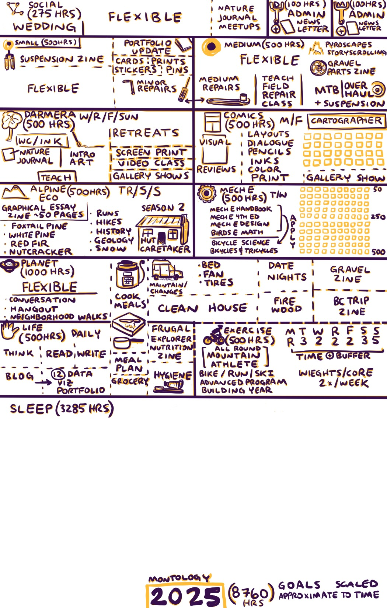

2025 Goals

A breakdown of the hours for 2025. This is part of a much larger series of 5 year projects that you can read about here.
I proportionally scaled the space devoted to each goal on the page based on the number of hours for each. I think that doing it this way makes it visual how much time we should be spending sleeping :). It also reflects priorities with the base physiological and personal needs along with my relationship with Caryn, then and only then do the other projects get additional time. All of these projects have significant time buffers built into them. As an example, I rarely sleep 9 hours, but when I am completely worked from exercise I do. Another way to build in a buffer is that I am not accounting for overlaps even though I typically do overlap projects. For example, Caryn and I will be going for a long gravel ride today. This ride is scouting for a local gravel guide zine we are putting together. This touches on both exercise and planet, but I am not counting on that happening all the time.
8760 - Total Hours
- 5475 - Sleep 9 hours (3285)
- 4475 - Planet (1000)
- 3975 - Life Maintain (500)
- 3475 - Alpine Ecology (500)
- 2975 - Comics (500)
- 2475 - MechE (500)
- 1975 - Exercise (500)
- 1875 - Montology Maintain (100)
- 1375 - Darmera (500)
- 1275 - Darmera Maintain (100)
- 775 - Medium Projects (500)
- 275 - Small Projects (500)
- 0 - Social (275)
I want to not feel time stress this year. I am much more creative when I am not time crunched in multiple aspects of life. This happens with external demands, so I build in a lot of extra buffer. A single deadline is enhanced when I have time buffers for everything else. If I have extra time to sit around for some reason, I sketch or write in my EDC sketchbook. All is well.
The projects this year are continuations of this year, but they are about going much deeper on some topics and finishing up some other ones that I now feel confident in the skillset to do it right (e.g. comics). The other thing I remind myself is that with all of these projects built on top of my personal and relationship base are super low stakes. THE STAKES ARE LOW. I want to do them because I think they are cool and I want to learn new things.
Darmera and Montology Admin (200 hrs)
Medium Sized Projects - 500 hours
- Gravel Bike Components Zine
- Design Drawing portfolio (12)
- Pyroscapes Graphic Essay (story scrolling website)
- training
- observation
- ecology
- species
- adventure
- Watershed History Comic? (idea if I have time)
- MTB - Overhaul
- Medium repairs for customers
- Teach Field Bike wrenching class
Small Projects - 500 hrs
- Suspension Class Zine
- layouts
- cover
- Minor Van Projects
- Minor Bike Repairs for customers
- Nature Illustration Portfolio
- Website
- Cards
- Prints
- Magnets
- Stickers
- Pins
COMICS - 500 hours - M/F
- Cartographer Issue 1
- Page Layouts
- Word Balloons
- Pencils
- Inks
- Colors
- Gallery Show - Comic launch! November 2025
Darmera - 500 Hours W/R/F/Sun
- Teach -
- Watercolor and Ink
- Nature Journaling
- Art Fundamentals
- Nature Journal Retreat Hosting
- Summer
- Fall
- Nature Screen Printing Workshop
- Video Classes Record
Alpine Ecology- 500 Hours - R/S/S
- Alpine ecology zine (50 pages - sketchnotes, hut observations, writing)
- Graphical Essay(s)
- Alpine Hut Season 1
- Alpine Hut Season 2
- Nature Journaling 1 page per week (Portfolio 12 pages- 1 portfolio piece per month)
- Nature Journal Comics Pages
- 1 - Foxtail Pine
- 2 - clarks nutcracker
- 3 - Western White Pine
- 4 - Snow comic
MECHE - 500 Hours Sketchnotes - T/W
- Bicycle mechanical engineering zine (50 pages sketchnotes)
- MechE Hand Book 1
- MechE 4th Edition 2
- MechE Design Book
- Birds Engineering Math Reference Book
- Bicycles and Tricycles - Concepts applied above
- Bicycle Science - Concepts applied above
Planet - 1000 Hours
- Flexible - Conversation, Hangout, Neighborhood Walks
- Gravel Zine collaboration with DW
- 1 - Ride, Map Viz, Nature, Essay, Illustrations
- 2 - Ride, Map Viz, Nature, Essay, Illustrations
- 3 - Ride, Map Viz, Nature, Essay, Illustrations
- 4 - Ride, Map Viz, Nature, Essay, Illustrations
- 5 - Ride, Map Viz, Nature, Essay, Illustrations
- BC Permaculture Farm Trip Zine - with DW
- Date Nights
- Cook Meals
- House Cleaning
- Medium sized van projects
- Fire wood gather, split, stack, dry, store
Move - 500 hours T/W/R/F/S/S
- All Round Mountain Athlete
- Advanced Training Program (Uphill Athlete PLUS)
- Bike (MTB and Gravel)
- Trail Run
- Hike (weighted)
- Ski (Nordic, Downhill, BC)
- Begin Base Training Phase with 10 hours- Later Goal TBD
Life - 500 hrs
- Personal Hygiene
- Think
- Write/Journal
- Read
- Blog
- Exercise data - data viz portfolio
- Cook Meals
- Grocery Shop
- Frugal Explorer Nutrition Zine
- House Cleaning
Sleep - 3285 hrs
- mmmm ….dreams
Social